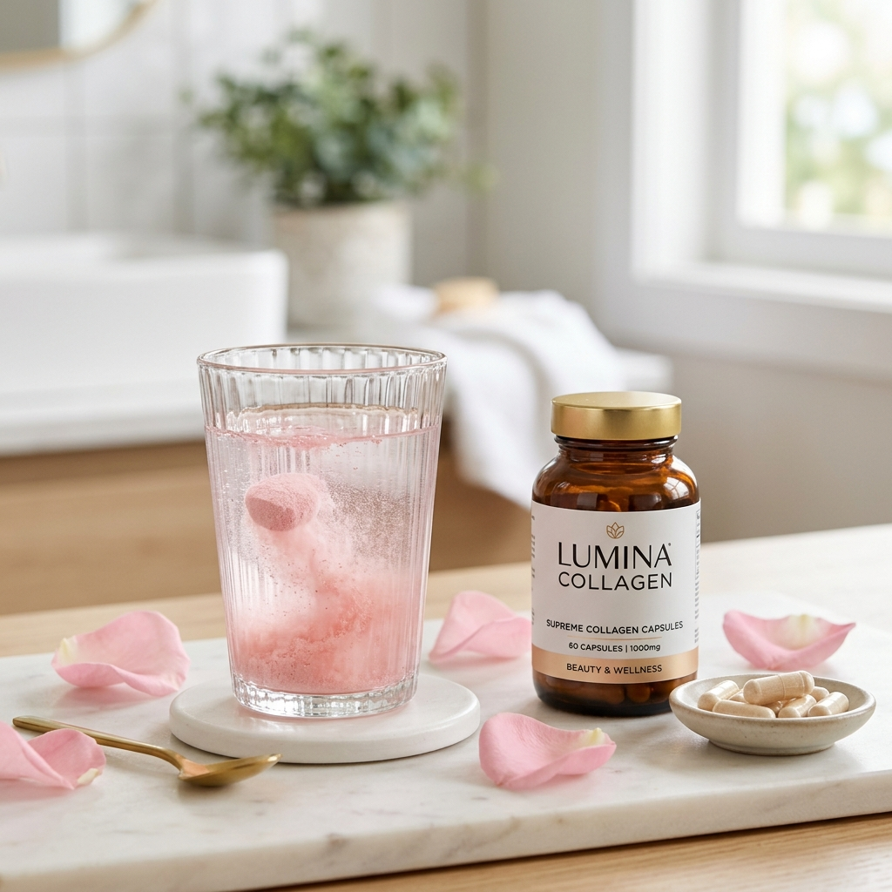

Colágeno Hidrolisado: Ciência ou Mito para Pele e Articulações?

Pin ItO **Colágeno** é frequentemente chamado de a "cola" que mantém o nosso corpo unido. Ele representa cerca de 30% das proteínas totais do nosso organismo, sendo o principal componente estrutural da derme (pele), dos tendões e das cartilagens.
Com o passar do tempo, a produção natural dessa proteína cai, o que nos leva a buscar formas externas de reposição. Mas será que todo colágeno funciona? Vamos desvendar o que a ciência diz sobre a suplementação.
Elasticidade da Pele e Antienvelhecimento
A partir dos 25 anos, perdemos cerca de 1% de colágeno ao ano. Esse processo se acelera após a menopausa. A suplementação com **colágeno verisol** ou hidrolisado fornece os peptídeos necessários para estimular os fibroblastos a produzir novo colágeno, resultando em uma redução visível de rugas e da flacidez.
Pele e Rugas
Péptidos bioativos agem nas camadas profundas da pele, aumentando a hidratação e a firmeza.
Unhas e Cabelos
Reduz a descamação das unhas e fortalece a fibra capilar, evitando a quebra.
Saúde Articular
O Colágeno Tipo II ajuda na regeneração das cartilagens e reduz dores em joelhos e quadris.
O Papel da Vitamina C e Zinco
Não adianta tomar colágeno de forma isolada se o seu corpo não tiver os "pedreiros" para construir a proteína. A **Vitamina C** e o **Zinco** atuam como cofatores essenciais na síntese do colágeno. Sem eles, o aproveitamento do suplemento cai drasticamente.
Quando Tomar?
Dermatologistas sugerem o consumo preferencialmente à noite, antes de dormir, ou em jejum pela manhã. É importante manter a constância: os resultados na pele costumam aparecer após 8 a 12 semanas de uso diário.
💅 Escolha o Colágeno Certo para Você
Verifique se o produto contém peptídeos bioativos e se é livre de açúcares e corantes artificiais. Veja nossa seleção de Colágenos Verisol na Shopee.
Perguntas Frequentes (FAQ)
1. Colágeno em pó é melhor que em cápsula?
O que importa é a dose. Para o Tipo I (pele), a dose recomendada é de 9g a 10g, o que geralmente exige o formato em pó. As cápsulas costumam ser usadas para o Tipo II (articulações), onde a dose é menor (40mg).
2. Existe colágeno vegano?
O colágeno é de origem animal (bovina ou marinha). O que existe para veganos são "Precursores de Colágeno", que são vitaminas e aminoácidos que ajudam o próprio corpo a produzir sua proteína.